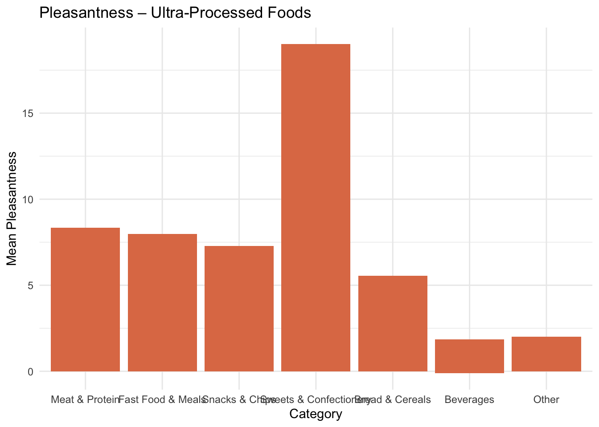

library(readxl)
library(dplyr)
file_path <- "data/Mendeley_dataset_table_1.xlsx"
col_names <- c("Item", "Pleasantness_Mean", "Pleasantness_SD", "Arousal_Mean", "Arousal_SD")
upf <- read_excel(file_path, sheet = "Table1b_UltraProcessed",
skip = 2, col_names = col_names) %>%
mutate(
Pleasantness_Mean = as.numeric(Pleasantness_Mean),
Arousal_Mean = as.numeric(Arousal_Mean),
Category = case_when(
Item %in% c("nugget", "bacon", "sausage", "hot dog",
"cooked pork salami") ~ "Meat & Protein",
Item %in% c("potato chips", "tortilla chips", "starch chips",
"microwave popcorn", "corn chips") ~ "Snacks & Chips",
Item %in% c("chocolate bar", "gums", "ice cream",
"chocolate-covered marshmallow", "popsicle",
"jelly", "cookie", "cookie stuffed with chocolate",
"cookie stuffed with vanilla", "chocolate discs",
"wafer cookies") ~ "Sweets & Confectionery",
Item %in% c("ready-to-eat pizza", "hamburguer",
"ready-to-eat lasagna", "instant noodles") ~ "Fast Food & Meals",
Item %in% c("breakfast cereals", "brazilian cheese bread",
"panettone with milk jam cream") ~ "Bread & Cereals",
Item %in% c("grape soda", "ready-to-drink chocolate milk",
"coke soda") ~ "Beverages",
TRUE ~ "Other"
)
) %>%
mutate(Category = factor(Category, levels = c(
"Meat & Protein", "Fast Food & Meals", "Snacks & Chips",
"Sweets & Confectionery", "Bread & Cereals", "Beverages", "Other"
)),
Item = reorder(Item, as.numeric(Category) * 100 + rank(Item)))
umpf <- read_excel(file_path, sheet = "Table1c_UnprocessedFood",
skip = 2, col_names = col_names) %>%
mutate(
Pleasantness_Mean = as.numeric(Pleasantness_Mean),
Arousal_Mean = as.numeric(Arousal_Mean),
Category = case_when(
Item %in% c("watermelon", "apple", "kiwi", "strawberry", "grape",
"papaya", "pineapple*", "pear", "mango", "apricot",
"orange", "peach", "banana") ~ "Fruit",
Item %in% c("salad", "salad*", "lettuce", "cherry tomato",
"broccoli", "potato", "string beans", "carrot",
"kale", "corn") ~ "Vegetables",
Item %in% c("beef", "salmon", "egg") ~ "Meat, Fish & Eggs",
Item %in% c("cashew nut", "bean") ~ "Nuts & Legumes",
Item %in% c("tapioca", "brazilian lunch") ~ "Grains & Meals",
Item %in% c("mandarin juice", "coconut water") ~ "Beverages",
TRUE ~ "Other"
)
) %>%
mutate(Category = factor(Category, levels = c(
"Meat, Fish & Eggs", "Fruit", "Vegetables",
"Nuts & Legumes", "Grains & Meals", "Beverages", "Other"
)),
Item = reorder(Item, as.numeric(Category) * 100 + rank(Item)))
library(tidyverse)
library(usethis)
library(ggplot2)
library(dplyr)
library(tidyr)
plot_bar <- function(data, y_var, title, y_label, fill_color) {
ggplot(data, aes(x = Category, y = .data[[y_var]])) +
geom_bar(stat = "identity", fill = fill_color) +
labs(title = title, y = y_label, x = "Category") +
theme_minimal()
}
#| label: fig-upf-pleasantness
#| fig-cap: "Mean pleasantness ratings for ultra-processed food items, grouped by category."
#| fig-width: 16
#| fig-height: 6
#| warning: false
plot_bar(upf, "Pleasantness_Mean",
"Pleasantness – Ultra-Processed Foods",
"Mean Pleasantness", "#E07B54")